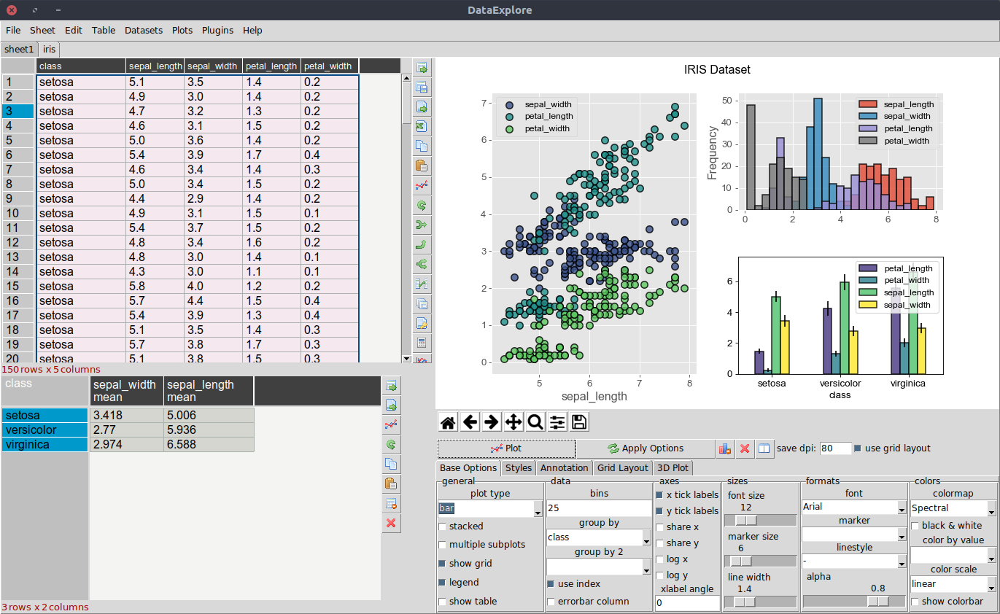

Introduction
This application is intended for educational/scientific use and allows quick visualization of data with convenient plotting functions. Though the program has a spreadsheet like interface, the focus is on data manipulation with very configurable 2D/3D plotting rather than data entry. Though basic cell editing and row/column changes are supported. The program is free and open source. It is based on a Python widget called pandastable which itself is a graphical frontend to the pandas DataFrame class.

Current features
- spreadsheet-like functions such as cell edit, column sort add/remove cells etc
- table manipulation tools such as groupby-combine, pivot, merge, join and concatenate
- reorder columns dynamically by mouse drags
- basic table formatting such as font, text size and column width
- import/export of supported text files
- rendering of very large tables is possible
- advanced interactive plots with simple interface
- open many tables at once and save projects
Installation
- Windows: Just download and run the installer.
- Linux: An installer is not needed. Follow the instructions. You can then run the command 'dataexplore' from the command line.
- OSX: No installer yet, but the linux instructions should work.
Future features
- manipulate time series data
- handle categorical data
- more sophisticated split-apply-combine tools
- proper factor plotting
- improve 3D plots